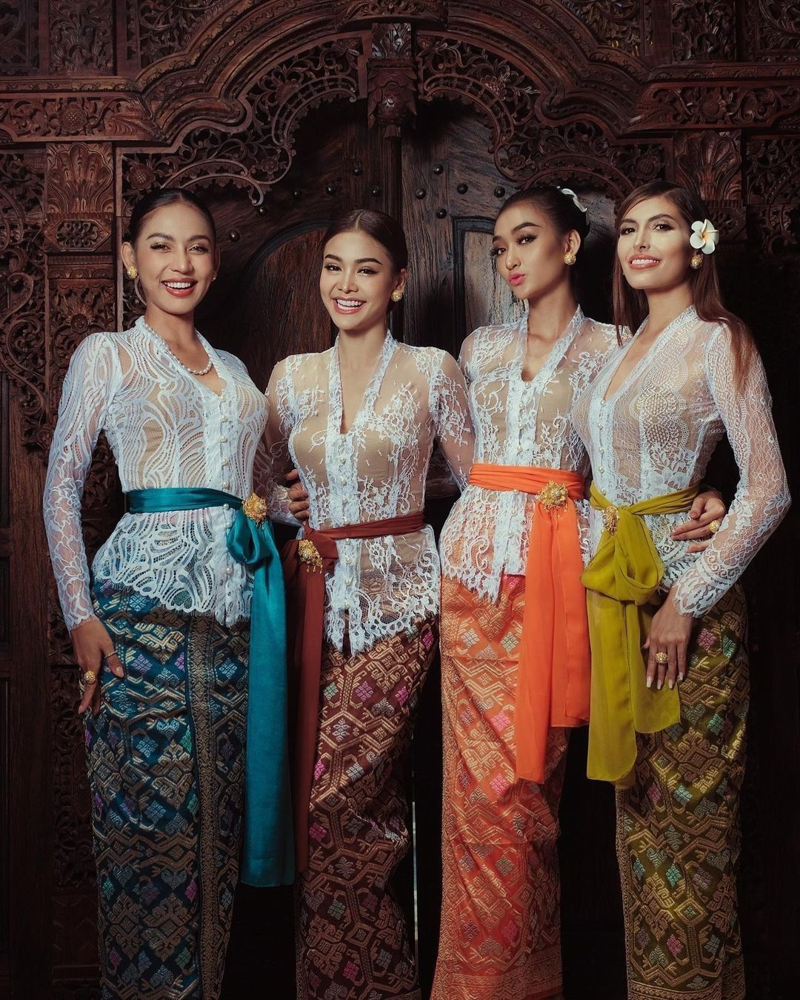
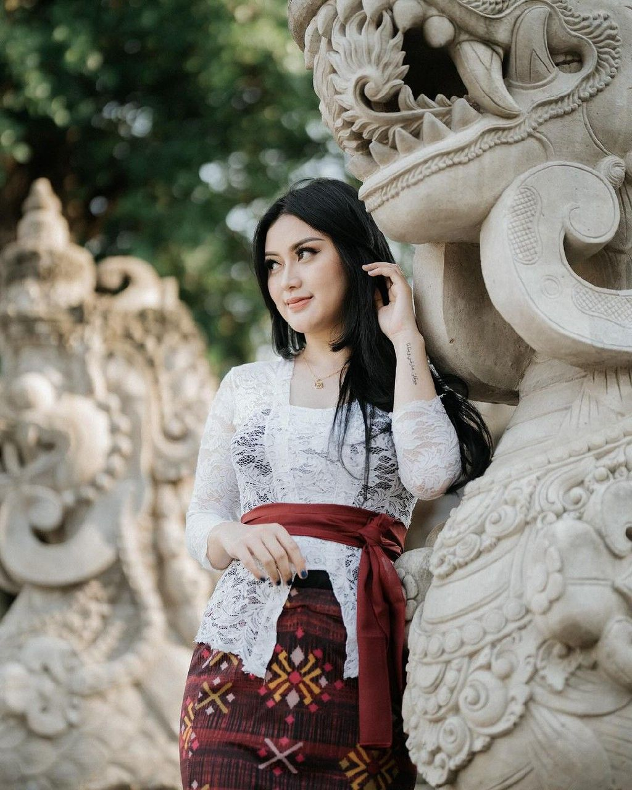
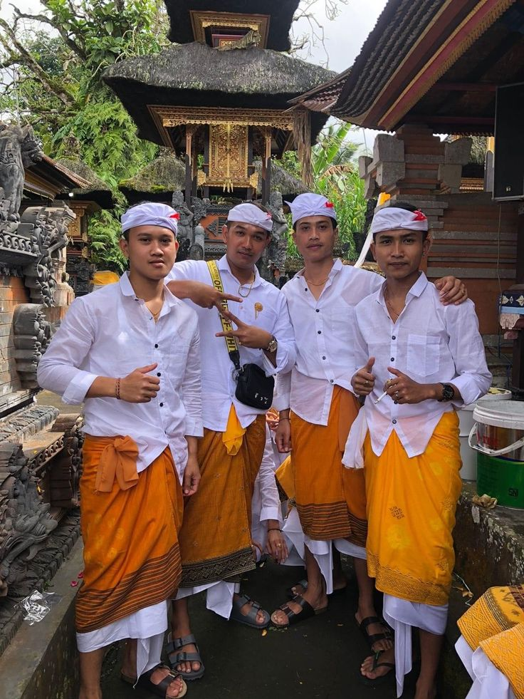

Busana Cerminan Filosofi Tri Hita Karana
Pakaian adat Bali bukan sekadar busana untuk menutupi tubuh atau mengikuti mode—ia adalah manifestasi visual dari filosofi Tri Hita Karana yang menjaga keharmonisan hubungan manusia dengan Tuhan, sesama, dan alam. Setiap elemen, mulai dari ikat kepala hingga kain bawahan, memiliki makna simbolis dan fungsi spiritual tersendiri, terutama dalam konteks upacara keagamaan dan adat.

Berbeda dengan budaya lain di mana pakaian adat hanya dikenakan pada acara-acara khusus atau festival tertentu, masyarakat Bali masih rutin mengenakan pakaian adat dalam kehidupan sehari-hari. Setiap kali ada upacara di pura—yang bisa terjadi hampir setiap hari mengingat banyaknya pura dan kalender upacara yang kompleks—Anda akan melihat ribuan orang berpakaian adat dengan bangga dan khidmat.
Kesadaran untuk berpakaian adat ini diajarkan sejak usia dini. Anak-anak Bali sudah terbiasa mengenakan kamen dan kebaya sejak mereka mulai diajak ke pura oleh orang tua mereka. Ini bukan kewajiban yang memberatkan, tetapi bagian alami dari identitas budaya yang mereka banggakan.
Pakaian Adat Wanita: Kebaya dan Kamen

Wanita Bali mengenakan Kebaya sebagai atasan, yang biasanya terbuat dari bahan brokat, sutra, atau katun berkualitas tinggi dengan warna-warna cerah dan motif yang indah. Kebaya Bali memiliki karakteristik khas dengan potongan yang pas di badan dan lengan panjang yang anggun, berbeda dari kebaya Jawa yang cenderung lebih longgar.

Bawahannya adalah Kamen, selembar kain panjang sekitar 2-3 meter yang dililitkan di pinggang hingga mata kaki. Cara melilitkan kamen memiliki teknik khusus yang harus dipelajari—terlalu longgar dan akan jatuh, terlalu ketat dan tidak nyaman untuk bergerak. Kamen biasanya bermotif tradisional seperti ceplok, kawung, atau motif-motif khas Bali lainnya.
Pinggang dihiasi oleh Selendang (Senteng) yang diikat dengan simpul hidup di sebelah kiri, sebagai simbol persembahan dan kesucian. Selendang ini bukan sekadar hiasan—ia memiliki fungsi spiritual penting sebagai pembatas antara tubuh bagian atas (yang dianggap suci) dan tubuh bagian bawah (yang dianggap lebih duniawi).
Untuk acara-acara yang sangat sakral atau upacara besar, wanita juga mengenakan Sabuk Prada (ikat pinggang emas berlapis) dan perhiasan emas tradisional seperti gelang, kalung, dan anting-anting. Rambut biasanya disanggul rapi dan dihiasi dengan bunga kamboja atau jepun yang menjadi simbol kesucian.
Pakaian Adat Pria: Baju Safari dan Udeng
Pria Bali mengenakan atasan berupa Baju Safari atau kemeja putih atau warna cerah. Baju safari adalah pilihan yang paling umum karena praktis namun tetap formal dan sopan untuk upacara keagamaan.

Bawahannya juga menggunakan Kamen yang dililitkan di pinggang, dengan cara yang berbeda dari wanita. Di atas kamen, pria mengenakan Saput tambahan, yaitu kain kotak-kotak (biasanya berwarna hitam-putih atau poleng) yang melambangkan keseimbangan antara baik dan buruk, terang dan gelap.
Elemen paling khas dari pakaian pria Bali adalah Udeng, ikat kepala yang bentuknya memiliki makna filosofis mendalam. Ujung udeng yang menghadap ke atas disebut centung, melambangkan pemikiran yang lurus dan selalu terarah kepada Tuhan. Ada berbagai jenis udeng dengan bentuk dan fungsi berbeda: udeng kepak dara untuk acara biasa, udeng dara kepak untuk acara yang lebih formal, dan lain-lain.
Proses mengikat udeng sendiri adalah seni tersendiri yang memerlukan latihan. Anak laki-laki Bali biasanya belajar mengikat udeng mereka sendiri sejak remaja, diajarkan oleh ayah atau kakek mereka—sebuah momen bonding lintas generasi yang juga merupakan transfer pengetahuan budaya.